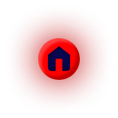

ㅤ저희 친가는 종갓집도 아닌데 선산이 있고, 그 근처에 신주 모시는 조그만 사당 같은 것도 있는 특이한 집입니다. 어렸을 때 저는 3살 터울인 남동생과 함께 그 선산에서 많이 놀곤 했었죠.그래서 그런지 어른들에게 유독 지겨울 정도로 많이 들었던 소리가 있었습니다.
ㅤ산에서 누가 이름을 불러도 최소 세 번 이상은 대꾸하지 말 것.뭐, 애들 둘이 어른도 없이 놀면 걱정되니까 하는 소리라고 생각할 수도 있겠지만, 지금 생각해보면 조금 다른 것 같습니다.
ㅤ초등학교 3학년 때, 저는 남동생과 함께 막대기 하나를 들고 선산으로 놀러갔습니다. 곳곳에 풀들이 상당히 많이 자라있었기 때문에 막대기로 그걸 일일이 헤치면서 가야 했거든요. 그렇게 한참을 신나게 놀았습니다. 머리위로 서서히 해가 져 가는것도 모를 정도로요. 어느덧 정신을 차려보니 벌써 주변이 서서히 어두워지기 시작하더군요. 동생도 무서웠는지 얼른 집에 가자고 보챘습니다.
ㅤ저는 동생을 데리고 막대기로 풀을 헤치며 산을 내려가기 시작했습니다. 그런데 이상하게도 아무리 내려가도 길이 안 보이는 겁니다. 같은 곳을 뱅뱅 돌고 있는 것 같았어요. 동생은 옆에서 얼른 집에 가자고 보채지, 날은 점점 어두워지지, 길은 안 나타나지... 정말 환장할 노릇이었습니다. 그런데 그때, 저 멀리서 뭔가 희끗희끗한 형체가 보였습니다. 얼굴은 보이지 않았지만 옷 색깔을 보니 평소에 우릴 예뻐해주셨던 옆집 할아버지인거 같았습니다. 안심한 저는 그 쪽으로 가려고 발을 내딛었습니다. 그때 할아버지의 목소리가 들렸습니다.[A야.]
ㅤ저는 대답하지 않았습니다. 뭔가 기분이 스산했거든요. 사람이 저렇게 무미건조한 목소리로 말할 수 있다는 걸 그때 처음 알았습니다.그리고 옆집 할아버지는 절대로 저희 남매의 이름을 부르지 않으시는 분입니다. 이름을 알려줘도 까먹으시는 데다가 보통 똥강아지라고 하시기 때문에...보통 사람들은 자기가 누굴 불렀을때 대답이 안 돌아오면 언성이 높아지잖아요? 근데 그것은 달랐습니다. 처음과 똑같은, 높낮이없는 목소리로 제 이름을 계속해서 불러대는겁니다.[A야, A야...] 하고요.
ㅤ저는 옆집 할아버지의 모습을 한 그것을 덜덜 떨며 쳐다보다가, 동생을 끌어안고 냅다 달리기 시작했습니다. 뒤에서 사박사박거리며 풀을 헤치는 소리가 나자 제 발은 더욱 빨라졌습니다. 초등학교 3학년짜리가 어디서 그런 힘이 솟아났는지 모르겠습니다. 한참을 달리다가 겨우 길을 발견해 집에 돌아왔을 때는 벌써 저녁상이 다 치워진 뒤였고, 저와 동생은 제때 집에 돌아오지 못했다며 할머니께 호되게 혼났습니다. 옆집 할아버지를 만나느라 늦었다고 동생이 울먹이며 변명을 해보았으나, 할머니는 옆집 할아버지께서는 오늘 자식들 보러가느라 윗지방으로 올라가셨다며, 제 동생의 말을 헛소리로 받아들이셨습니다. 할머니의 잔소리는 금세 잦아들었지만, 그날 있었던 일은 대학생이 된 지금까지도 제 마음에 남아있습니다. 옆집 할아버지의 모습을 한 그건 도대체 무엇이었을까요.
